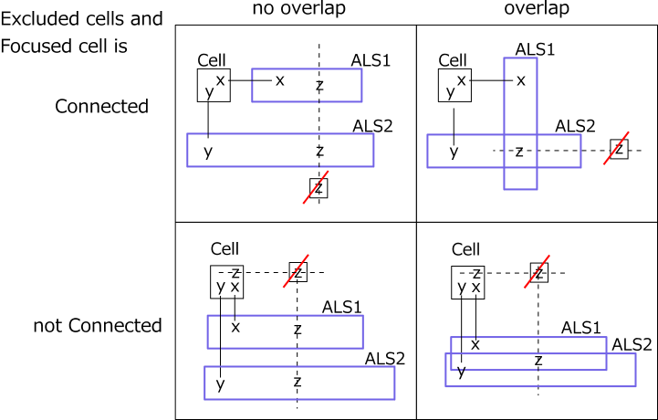
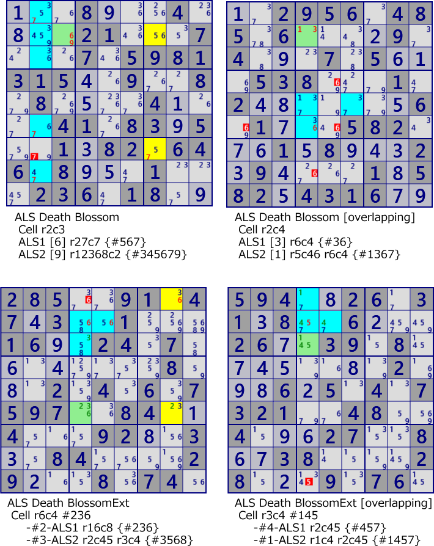
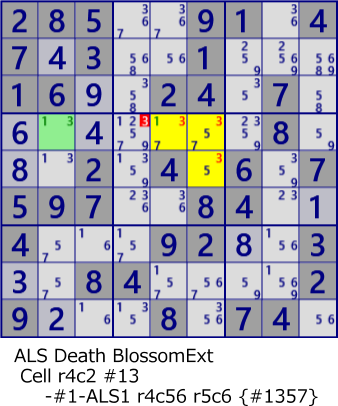

ALS Death Blossom(Enhanced)
DeathBlossom is an analysis algorithm based on the arrangement of ALS with a mysterious name.
i explain ALS DeathBlossom's evolutionary algorithm. In the explanation, XYZ-Wing,
ALS DeathBlossom(basic) are assumed.
- XYZ-Wing consists of an axis cell and multiple BivalueCells.
There are weak links in excluded candidate cells and axis cells.
Bivalue Cell is a 1-cell ALS, which can be replaced with general ALS and extended to XYZ-WingALS algorithm.
It is assumed that ALS group replacing Bivalue Cell has no overlap.
- ALS DeathBlossom(basic) is composed of one axis cell and ALS group.
There is no weak link between the excluded candidate cell and the axis cell.
In ALS DeathBlossom (basic form), the ALS group may or may not overlap.
- The composition of XYZ - Wing and ALS DeathBlossom is very similar. The logic here is almost the same.
However, "ALS group overlap" and "exclusion candidate and weak link between axis cells" are different.
Therefore, defining the Enhanced type of DeathBlossom combining these.
If there is a weak link between the exclusion candidate and the axis cell, ALS will be one less than the number of digits in the axis cell. There is also a DeathBlossom whose axis cell is Bivaluse and a combination with one ALS.

Example of ALS DeathBlossom(Enhanced)

...8...4....21...7...7.5981315..9..8.8....4....41.83.5..1.82.646.8...1...236.18..
..2956.485.6....9.4...7.5...538...1.2.......6.1...582...1.8...2.9....1.582.4316..
285..91.47.3..1...16..24.7........8...2.4.6.7597..84..4...92..3..84....29...8.74.
594..26.31.8..6...26..39.8........2...6.5.4.7321..48..4...27..8..38....28...9.76.
Bivalue cell and one ALS DeathBlossom

285..91.47.3..1...16..24.7........8...2.4.6.7597..84..4...92..3..84....29...8.74.
ALS DeathBlossom program
public partial class ALSTechGen: AnalyzerBaseV2{
public bool ALS_DeathBlossom(){
ALSMan.ALS_Search(1);
if( ALSMan.ALSLst==null || ALSMan.ALSLst.Count<=2 ) return false;
ALSMan.Create_Cell2ALS_Link();
for( int sz=2; sz<=4; sz++ ){
if( _ALS_DeathBlossomSubEx(sz,false) ) return true;
}
return false;
}
public bool ALS_DeathBlossomExt(){
ALSMan.ALS_Search(1);
if( ALSMan.ALSLst==null || ALSMan.ALSLst.Count<=2 ) return false;
ALSMan.Create_Cell2ALS_Link();
for( int sz=2; sz<=4; sz++ ){//Size 4 and over ALS DeathBlossom was not found ?
if( _ALS_DeathBlossomSubEx(sz,true) ) return true;
}
return false;
}
private bool _ALS_DeathBlossomSubEx( int sz, bool stmLink=false ){
int szM= (stmLink? sz-1: sz);
foreach( var SC in pBDL.Where(p=>p.FreeBC==sz) ){ //Stem Cell
if(AnMan.CheckTimeOut()) return false;
List<LinkCellAls> LinkCeAlsLst=ALSMan.LinkCeAlsLst[SC.rc];
if( LinkCeAlsLst==null || LinkCeAlsLst.Count<sz ) continue;
int nxt=0, PFreeB=SC.FreeB;
var cmb=new Combination(LinkCeAlsLst.Count,szM);
while(cmb.Successor(nxt)){
int FreeB=SC.FreeB, AFreeB=0x1FF;
for( int k=0; k<szM; k++ ){
nxt=k;
var LK=LinkCeAlsLst[cmb.Cmb[k]]; //Link[cell-ALS]
if( (FreeB&(1<<LK.nRCC))==0 ) goto LNxtCmb;
FreeB = FreeB.BitReset(LK.nRCC);
AFreeB &= LK.ALS.FreeB;
if( AFreeB==0 ) goto LNxtCmb;
}
if(stmLink){
if( FreeB.BitCount()!=1 || (FreeB&AFreeB)==0 ) continue;
int no=FreeB.BitToNum();
int noB=FreeB;
Bit81 Ez=new Bit81();
for( int k=0; k<szM; k++ ){
var ALS=LinkCeAlsLst[cmb.Cmb[k]].ALS;
var UClst=ALS.UCellLst;
foreach( var P in UClst.Where(p=>(p.FreeB&noB)>0) ) Ez.BPSet(P.rc);
}
foreach( var P in ConnectedCells[SC.rc].IEGet_rc().Select(rc=>pBDL[rc]) ){
if( (P.FreeB&noB)==0 ) continue;
if( (Ez-ConnectedCells[P.rc]).IsZero() ){ P.CancelB=noB; SolCode=2; }
}
if(SolCode<1) continue;
var LKCAsol=new List<LinkCellAls>();
Array.ForEach(cmb.Cmb,nx=> LKCAsol.Add(LinkCeAlsLst[nx]) );
_DeathBlossom_SolResult(LKCAsol,SC,no,stmLink);
if( !AnMan.SnapSaveGP(true) ) return true;
}
else if( FreeB==0 && AFreeB>0 ){
AFreeB = AFreeB.DifSet(SC.FreeB);
foreach( var no in AFreeB.IEGet_BtoNo() ){
int noB=(1<<no);
Bit81 Ez=new Bit81();
for( int k=0; k<sz; k++ ){
var ALS=LinkCeAlsLst[cmb.Cmb[k]].ALS;
var UClst=ALS.UCellLst;
foreach( var P in UClst.Where(p=>(p.FreeB&noB)>0) ) Ez.BPSet(P.rc);
}
foreach( var P in pBDL.Where(p=>(p.FreeB&noB)>0) ){
if( (Ez-ConnectedCells[P.rc]).IsZero() ){ P.CancelB=noB; SolCode=2; }
}
if(SolCode<1) continue;
.
. (Solution report code)
.
return true;
}
}
LNxtCmb:
continue;
}
}
return false;
}
}